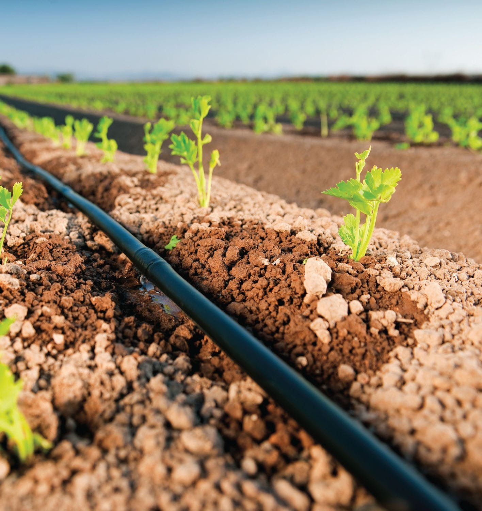
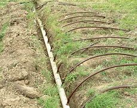

Effective Irrigation Methods
1. Drip Irrigation:
Description: Delivers water directly to the root zone of plants through a network of valves, pipes, tubing, and emitters.
Advantages: Minimizes water loss due to evaporation and runoff, reduces weed growth, and allows for precise water and nutrient delivery.
Best For: High-value crops, gardens, orchards, and vineyards.
2. Sprinkler Irrigation:

Description: Distributes water through a system of pipes and sprinklers that simulate natural rainfall.
Advantages: Suitable for a variety of crops and terrains, can cover large areas, and is relatively easy to install and manage.
Best For: Field crops, lawns, and landscapes.
3. Center Pivot Irrigation:

Description: A type of sprinkler system that rotates around a central pivot point, creating a circular irrigation pattern.
Advantages: Efficient water use, reduced labor requirements, and uniform water application.
Best For: Large-scale farming operations, especially in flat or gently rolling fields.
4. Surface Irrigation:

Description: Involves applying water directly to the soil surface and allowing it to infiltrate and distribute through gravity.
Types: Furrow, basin, and border irrigation.
Advantages: Low initial investment and energy costs, simple to operate.
Best For: Row crops, pastures, and orchards with suitable soil types and topography.
5. Subsurface Irrigation:
Description: Delivers water below the soil surface directly to the root zone through buried drip lines or porous pipes.
Advantages: Minimizes evaporation and surface runoff, reduces weed growth, and improves water use efficiency.
Best For: High-value crops, turf, and landscapes in areas with limited water availability.
6. Automated Irrigation Systems:
Description: Uses sensors, timers, and computer controls to automate and optimize irrigation schedules based on soil moisture, weather conditions, and crop needs.
Advantages: Saves time, reduces water waste, and ensures plants receive the right amount of water.
Best For: Gardens, landscapes, greenhouses, and precision agriculture.
Factors to Consider When Choosing an Irrigation Method:
- Soil Type: Sandy soils drain quickly and require frequent, smaller amounts of water, while clay soils retain water longer and benefit from less frequent, deeper watering.
- Crop Type: Different crops have varying water requirements and tolerance to water stress.
- Climate: Local weather patterns, including rainfall and temperature, influence irrigation needs and methods.
- Water Availability: The quantity and quality of available water can dictate the most suitable irrigation method.
- Topography: The slope and layout of the land affect water distribution and runoff.
By selecting the appropriate irrigation method based on these factors, farmers and gardeners can optimize water use, enhance crop performance, and contribute to sustainable water management practices.